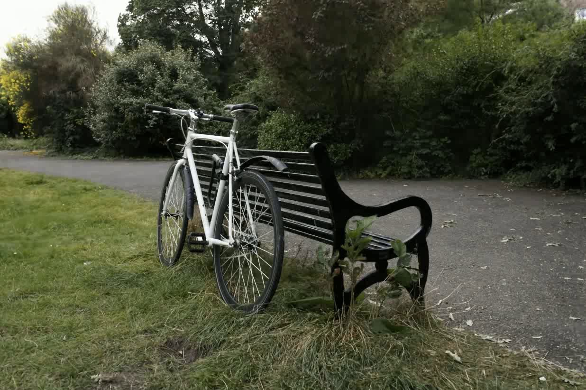
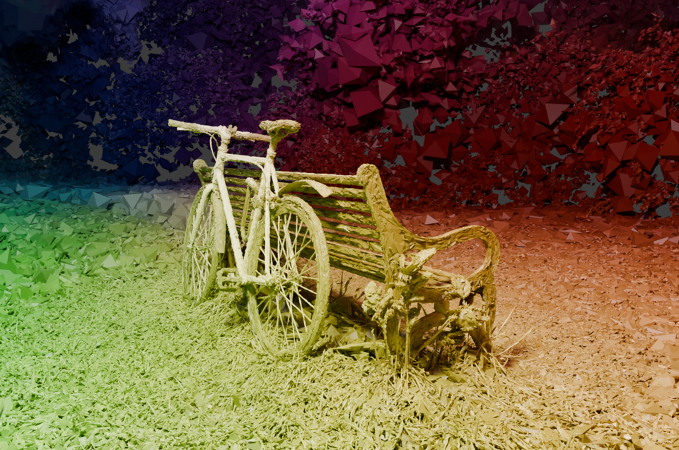
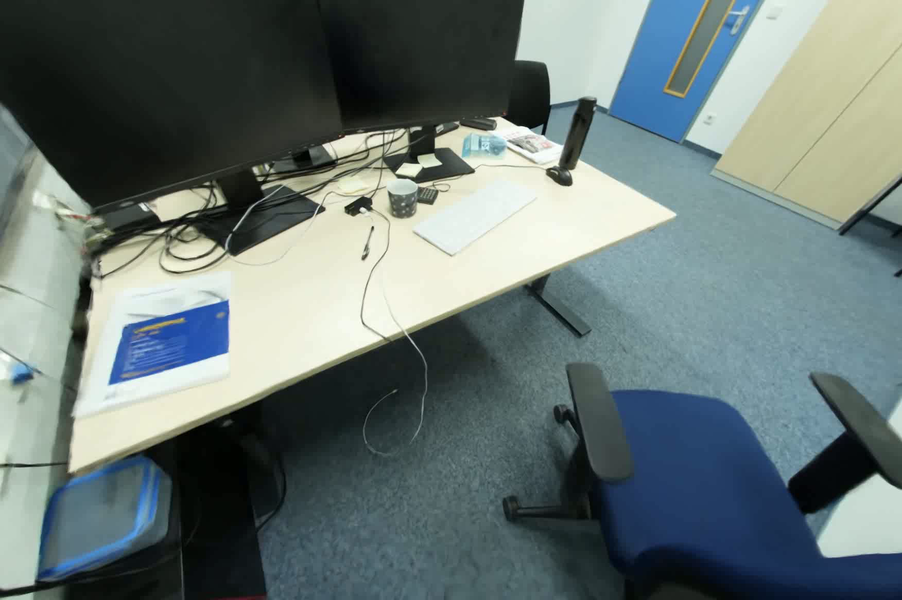
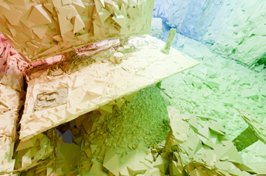
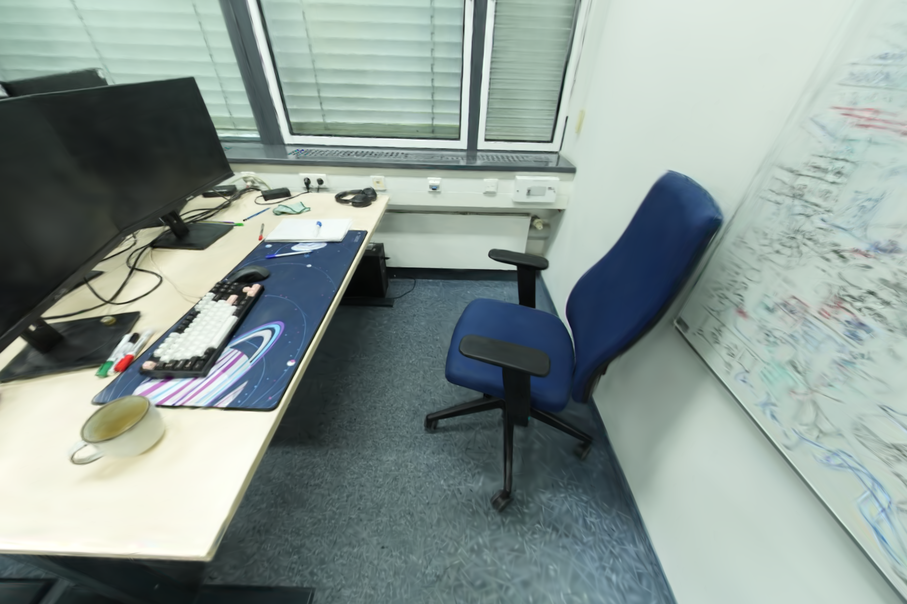
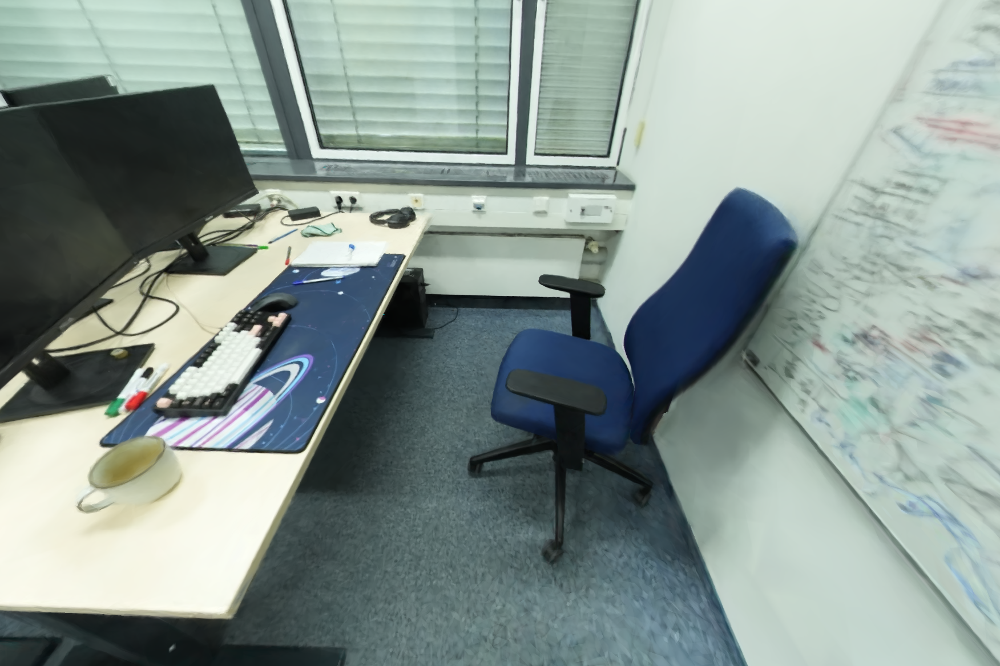
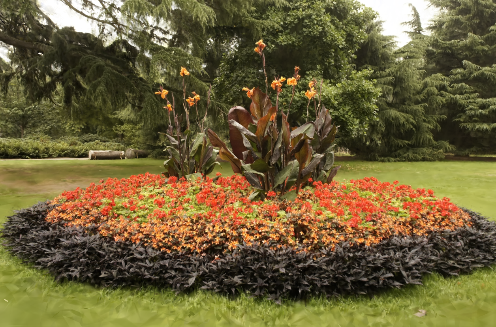
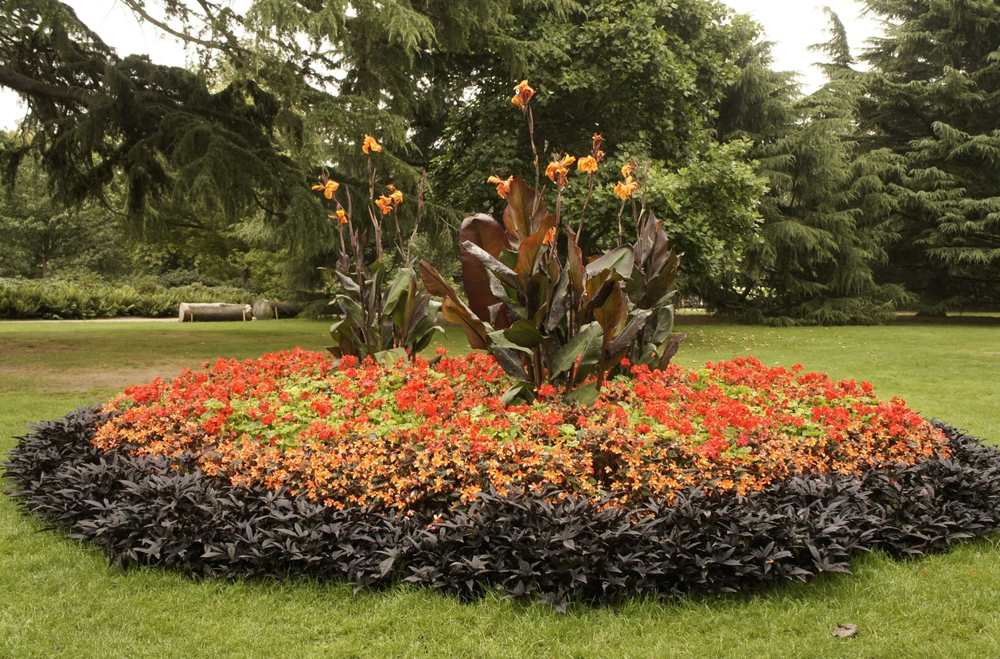

Volumetric rendering has become central to modern novel view synthesis methods, which use differentiable rendering to optimize 3D scene representations directly from observed views. While many recent works build on NeRF or 3D Gaussians, we explore an alternative volumetric scene representation. More specifically, we introduce two new scene representations based on linear primitives—octahedra and tetrahedra—both of which define homogeneous volumes bounded by triangular faces. This formulation aligns naturally with standard mesh-based tools, minimizing overhead for downstream applications. To optimize these primitives, we present a differentiable rasterizer that runs efficiently on GPUs, allowing end-to-end gradient-based optimization while maintaining realtime rendering capabilities. Through experiments on real-world datasets, we demonstrate comparable performance to state-of-the-art volumetric methods while requiring fewer primitives to achieve similar reconstruction fidelity. Our findings provide insights into the geometry of volumetric rendering and suggest that adopting explicit polyhedra can expand the design space of scene representations.








@inproceedings{vonlinprim,
title={LinPrim: Linear Primitives for Differentiable Volumetric Rendering},
author={von L{\"u}tzow, Nicolas and Nie{\ss}ner, Matthias},
booktitle={The Thirty-ninth Annual Conference on Neural Information Processing Systems},
year={2025}
}